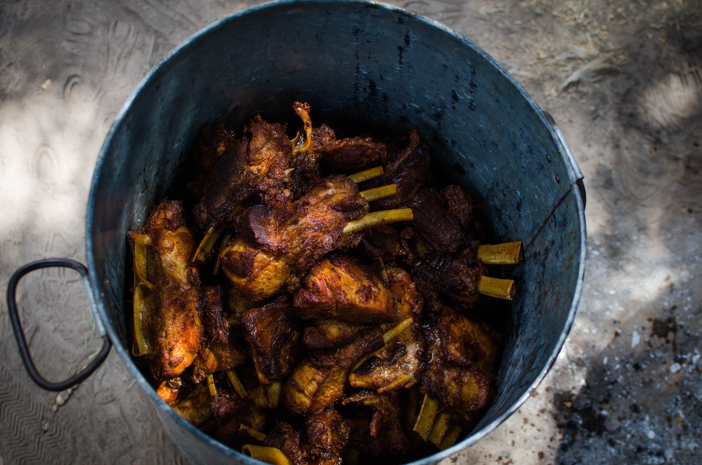

Red Wine Braised Short Ribs

Beef dish best served with side of mashed potatoes and Flat breads
Ingredients
- 2 pounds of short rib
- 3 carrots, diced
- 2 celery stalks, diced
- 1 onion, diced
- 2 cloves of garlic, diced
- 5 – 6 small ripe tomatoes
- 1 teaspoon of cumin
- 1 -2 dried chilies
- 2 -3 cardamom pods
- 3/4 of a bottle of red wine
- 1/4 cup of fresh parsley, chopped
- Salt
Instructions
- Heavily salt your short ribs and place in the fridge for up to 24 hours. Once, the dry brine is done pat dry your short ribs and set aside.
- In a large skillet add enough oil to generously cover the pan and set the heat to medium high. Sear each side of the short ribs until golden brown.
- Remove the short ribs onto a plate & set aside. Set the heat to medium low and add in all your aromatics (carrots, celery, and onions). Immediately add salt and slowly caramelize your veggies for 20 minutes.
- While your veggies are caramelizing, head over to your spice drawer and grab your spices ( whole cumin, dried chilies, cardamom pods, and sliced garlic). Add them to a motar and pestle and give them a good grind before adding them into pan with your aromatics. Cook everything together for 5 minutes.
- Next, add in your diced tomatoes and cook down for 5 minutes as well. After that add in 3/4 of a bottle of red wine and let that cook for another 5 minutes to reduce and cook off the alcohol.
- Place your short ribs back into the pan and add enough water to cover more than half of the short ribs.
- Cover with aluminum foil and place in the oven at 275 f for 3 -4 hours.
- Once it’s super tender, take it out of the oven, add in some chopped parsley. Serve while hot!